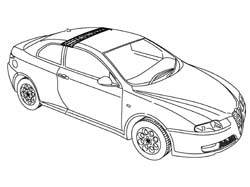
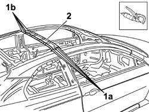
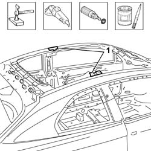
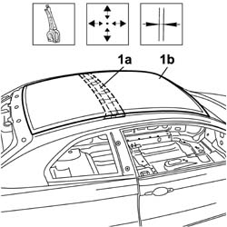
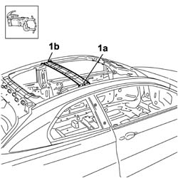

7210B18 R.R. ROOF SUPPORT CROSSMEMBER
- Path
- Procedures > 72 PANELS AND FRAME > 7210 REMOVING REFITTING > 7210B STRUCTURE ELEMENTS-CENTRAL AND REAR PART > 7210B18 R.R. ROOF SUPPORT CROSSMEMBER
- Kind
- repair procedure (removal / refitting; the operation number is the code)
- Applies to
- all engines; all production periods
- Interactive page
- https://sloeber94.github.io/elrnDB-aGt/en/#/125002040
Applies to: all engines; all production periods
 Removing
Removing
 Refitting
Refitting- Check that the components connected are not distorted by checking the bodyshell alignment measurements using suitable equipment (gauges, templates or jigs).
- Straighten the body as necessary.

Applies to: all engines; all production periods
- Use the chamfering machine on the spot welds on the right side (1a) and on the left side (1b).
- Remove the roof supporting crossmember.

Applies to: all engines; all production periods
Refitting
Removing- Straighten the edges of the housing for the roof supporting crossmember using a hammer and dolly block.
- Remove the spot weld residues using a disc grinder.
- Use a rotary brush and clean the areas treated previously.

Applies to: all engines; all production periods
- Position the replacement part (1a) correctly in the housing using self-locking clamps, then position the roof (1b) on the vehicle and check for any distortions.
- Remove the roof.

Applies to: all engines; all production periods
- Using the spot welder, weld the roof supporting crossmember on the right side (1a) and on the left side (1b).
- Use a rotary brush and clean the areas welded previously.
- Apply the anti-oxidant protection to the areas involved in the welding.

Applies to: all engines; all production periods